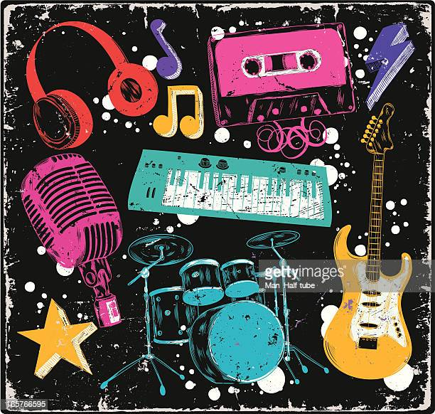

My Experience
I would like to relate my experience with my hobbies.
For my hobbies there is several things that i like to do during my free time which is drawing, listening to music and watching videos/drama/movies etc.
Therefore, i began to explore more and experience more about my hobbies which I gain more knowledge about it
During my free time i like to learn new language such as Korean and Japanese
I also get to learn more about art and technology such as digital drawing and design, video editing using editing software and mobile apps, a little bit of music editing and arrangement
A part from that i also likes to learn new instrument and learning singing as I found music is amazing and interesting as it helps me to educe my stress and maintain my mental heaalth
As for learning a new language, it can helps me to understand the language better and it giving me a chance to communicate better in a different country in the future
A for working experience, I havent got any working experience yet during my student year as i have not get any chance in finding a part time job
It is hope that i get to find any job available and applying for the job after i finished my studies later on
